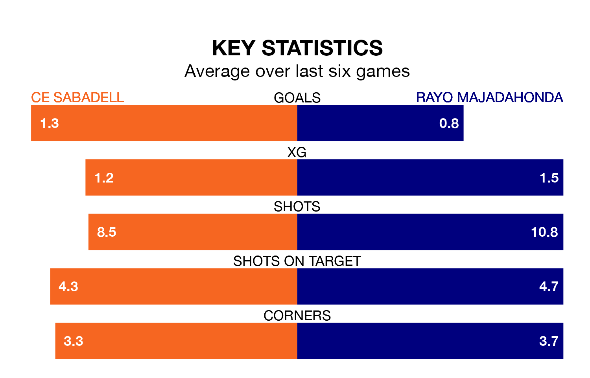

Rayo Majadahonda travel to CE Sabadell on early Sunday in Primera Division RFEF Group 1.
The visitors come into the game on the back of a draw in their last match, having tied with Cultural y Deportiva Leonesa 1-1 at home.
CE Sabadell also drew their last match, 1-1 against SD Logroñés.
Rayo are 17th in the table after 21 games, of which they have won four and drawn eight, earning 20 points.
CE Sabadell are one place ahead of the visitors in 16th, with six wins and three draws putting them on 21 points.
With 17 goals in 21 games so far this season, Rayo are scoring at below the league average rate with 0.8 goals per game. And they are conceding more than average, letting in 26 goals at a rate of 1.2 per game.
The home team, meanwhile, are above average scorers, with 1.1 goals per game, compared to a league average of 1.0. They have conceded 1.6 goals per game.
CE Sabadell are in good form in Primera Division RFEF Group 1, with four wins and a draw from their last six games.
With two wins and two draws over that period, Rayo's form is worse – they have taken eight points from 18, compared to CE Sabadell's 13.
Updated: 10:03 (UTC), 30/01/24